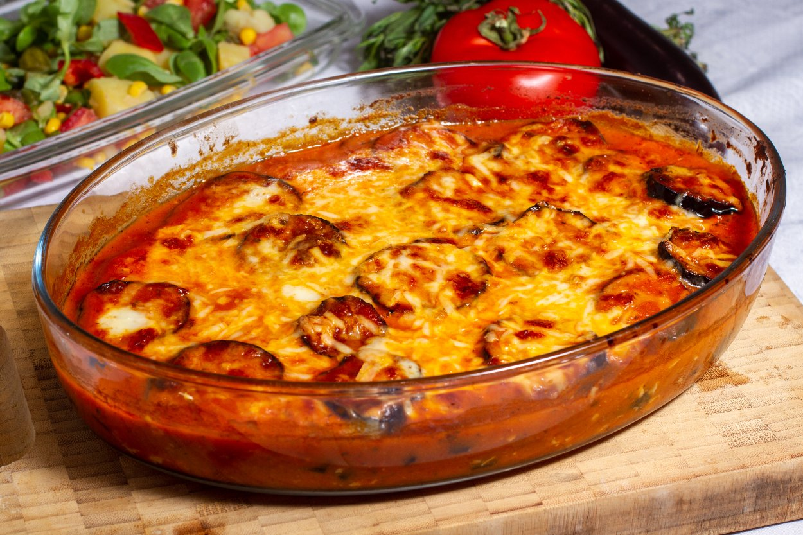

Melanzane Tarifi

Bu tarifte domatesli, mis gibi kekik kokan ve sarımsakla lezzetlenen
şahane bir sos başrolde. Kızarmış patlıcanlara en çok yakışan
malzemelerden biri olan kaşar peyniri de bu tarifi olmazsa
olmazlarından. Yapımı biraz aşamalı olsa da ortaya çıkan lezzet tek
kelimeyle efsane. Tarifin orijinali ise İtalyan mutfağına ait.
Karşınızda bu favori tariflerinizden biri olacak melanzane! Dilerseniz
içerisine farklı peynirler ilave edebilirsiniz. Kabak, patates ve
biberleri de kızartabilir bu tarifin içerisine ekleyebilirsiniz. Her
hali nefis, her türlüsü şahane! Hadi buyurun melanzane tarifine.
Tarif için malzemeler...
- 3 adet patlıcan
- 1 su bardağı sıvı yağ
- 2 yemek kaşığı zeytinyağı
- 1 adet orta boy soğan
- 3 diş sarımsak
-
2 adet orta boy domates (konserve olarak hazırladığınız domates
sosları da olabilir)
- 5-6 dal taze kekik
- 1 çay kaşığı karabiber
- 1 çay kaşığı tuz
- 1 tatlı kaşığı toz şeker
- 1/2 su bardağı sıcak su
- 300 gram rendelenmiş kaşar peyniri
Tarif adımları...
-
Patlıcanları güzelce yıkayıp alacalı doyun. Orta kalınlıkta yuvarlak
şekilde dilimleyin. Bir kızartma tavasına ayçiçek yağını koyup
kızdırın. Patlıcanları güzelce kızartıp bir kağıt havlu üzerine
alın.
-
Sosu hazırlamak için zeytinyağında soğanları kavurun. Rendelediğiniz
sarımsakları da ekleyip biraz daha kavurmaya devam edin.
-
Üzerine rendelediğiniz domatesleri ya da domates sosunu ekeyip
pişirin. Sos kıvamına gelen domateslerin içine ince ince kıydığınız
kekikleri ekleyin.
-
Tuz, karabiber ve şekeri de ekleyip biraz daha pişirin ve bir
blender yardımıyla sosunuzu pürüzsüz hale getirin.
-
Bir borcama ya da fırın tepsisine domates sosundan bir kepçe koyup
tepsinin tabanına güzelce yayın.Üzerine kızarttığınız patlıcanların
bir kısmını dizin.
-
Patlıcanların üzerine rendelenmiş kaşar peynirini yayın ve domates
sosundan gezdirin. Bu şekilde malzemeleriniz bitene kadar her kat
için aynı işlemi yapın.
-
En üst kata domates sosu yaydıktan sonra rendelenmiş kaşar peyniri
ekleyip önceden ısınmış 180 derece fırında yaklaşık 25 dakika
pişirin.
- Yemeğinizi sıcak olarak servis edebilirsiniz. Afiyet olsun!